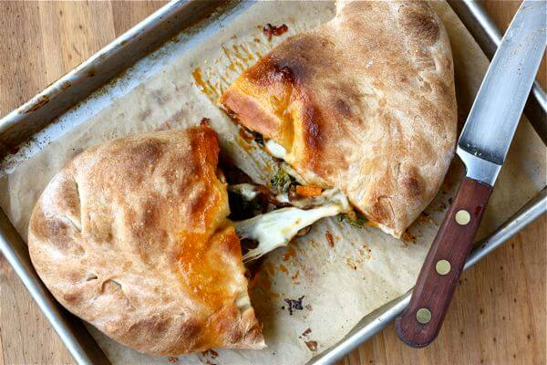

Calzone

Description
A calzone is an Italian oven-baked folded pizza, often described as a turnover, made with leavened dough. This is real calzone, because there is no tomato sauce INSIDE of it!
Time Requirement
- Prep: 1 Hour
- Cook: 30 Minutes
- Total: 1 Hour 30 Minutes
- Servings: 8
Ingredients
- 1 (.25oz) package active dry yeast
- 1 cup warm water
- 1 tablespoon olive oil
- 1 teaspoon white sugar
- 1 teaspoon salt
- 2 1/2 cups all-purpose flour, divided
- 1 teaspoon olive oil
- 1/2 cup ricotta cheese
- 1 1/2 cups shredded cheddar cheese
- 1/2 cup diced pepperoni
- 1/2 cup sliced fresh mushrooms
- 1 tablespoon dried basil leaves
- 1 egg beaten
Directions
- To Make Dough: In a small bowl, dissolve yeast in water. Add the oil, sugar and salt; mix in 1 cup of the flour until smooth. Gradually stir in the rest of the flour, until dough is smooth and workable. Knead dough on a lightly floured surface for about 5 minutes, or until it is elastic. Lay dough in a bowl containing 1 teaspoon olive oil, then flip the dough, cover and let rise for 40 minutes, or until almost doubled.
- To Make Filling: While dough is rising, combine the ricotta cheese, Cheddar cheese, pepperoni, mushrooms and basil leaves in a large bowl. Mix well, cover bowl and refrigerate to chill.
- Preheat oven to 375 degrees F (190 degrees C).
- When dough is ready, punch it down and separate it into 2 equal parts. Roll parts out into thin circles on a lightly floured surface. Fill each circle with 1/2 of the cheese/meat filling and fold over, securing edges by folding in and pressing with a fork. Brush the top of each calzone with egg and place on a lightly greased cookie sheet.
- Bake at 375 degrees F (190 degrees C) for 30 minutes. Serve hot.
Nutritional Facts
Per Serving: 335 calories; protein 13.8g; carbohydrates 31.6g; fat 16.7g; cholesterol 63.6mg; sodium 667mg.